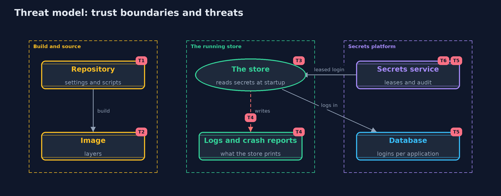

Threat Model — Secrets Management
A threat model answers four questions: what are we protecting, who or what could harm it, how, and what do we do about it. This one covers this project's own demo system, not a production deployment. Domain: an online store.
Scope
How an online store's database password and payment key reach its servers: the repository, the build and image, the running process, its logs, and a secrets service that leases database logins. It covers developers' mistakes, a thief with a copy of the repository or image, and a thief with a copied login. It does not cover the security of the secrets server's own storage, or platform identity.
What we protect (assets)
- The database password and every leased database login.
- The payment provider's API key and its versions.
- Each application's credential for the secrets service.
- The audit trail of the secrets service.
Who and what acts on the system
- Developers and build servers that handle configuration.
- The store's servers, which read secrets at startup.
- A thief with a copy of the repository, an image or a log.
- A thief with a copied login.
Trust boundaries
A trust boundary is a line that data or a request crosses between parts that trust each other differently. Threats cluster where those lines are.
- Source and build to the running store: anything copied across outlives the run.
- The store's process to its logs and child processes.
- The store to the secrets service: the application must prove who it is.

Each dashed box is a trust boundary. A rose tag such as T1 shows where the threat of that number, in the table below, applies.
Threats, using STRIDE
STRIDE is a checklist of six kinds of threat: Spoofing (S), Tampering (T), Repudiation (R), Information disclosure (I), Denial of service (D), Elevation of privilege (E).
| Id | Kind | Threat | Where it shows up | Control in this project | What is left |
|---|---|---|---|---|---|
| T1 | Information disclosure | A secret committed to the repository is read by anyone with a copy, for ever | SecretScanner, the sample repository |
Secrets stay out of files; settings name where a secret comes from; a scanner checks every commit | A scanner finds only what it has patterns for, and a secret once committed must be treated as leaked and rotated |
| T2 | Information disclosure | A secret copied into an image layer is read from the image, even after a later layer deletes it | ImageLayers |
Secrets are injected at run time, never built into images | Images built before the change still contain the secret and must be deleted |
| T3 | Information disclosure | A secret in an environment variable, or a secret file readable by others, is read by another process or user | MountedSecrets.read |
Owner-only secret files are read once at startup; files readable by others are refused | Anyone who can run code as the store's own user can still read the secret from its memory |
| T4 | Information disclosure | A secret is written into a log line, a crash report or an error page | Secret.toString |
The Secret type prints [redacted] and is wiped after use | Code that turns the value into a String on purpose can still log it; reviews and log scanning remain |
| T5 | Spoofing | A copied database login is used by someone else | SecretsService, Database.login |
Logins are per application, leased for 900 seconds, renewable only to 3600, and revocable at once | A thief can use a copied login until it ends or is revoked, and can renew it with a stolen application credential |
| T6 | Elevation of privilege | The secrets service is compromised and hands out every secret | the secrets service | Applications prove who they are; every request is audited | The secrets service is the most valuable system to protect, with its own access control, monitoring and backups |
Assumptions
- The secrets service is reachable only by the store's applications, and its own storage is protected.
- File permissions are enforced by the operating system.
- In the demo, every secret value is an obviously fake demo value, and generated passwords are random and never printed.
Out of scope
- Encryption at rest and unsealing of a real secrets server: the -with-openbao version.
- Workload and platform identity: the advanced track.
- Scanning the history of a real repository.
How the tests check this
SecretTestchecks that a secret never prints, compares values and stops working once wiped.LeaksTestchecks the scanner, entropy, the image-layer leak and refusal of a secret file readable by others.ServiceTestchecks per-application logins, refusals and audit, expiry, renewal limits, revocation and rotation.DemoRunsTestcompares the whole demo with the golden output and checks that no secret value is printed.
Where this model goes next
The next project, artifact-signing, moves from the secrets an application uses to the trust in the application itself: signing a release and checking it before it runs.